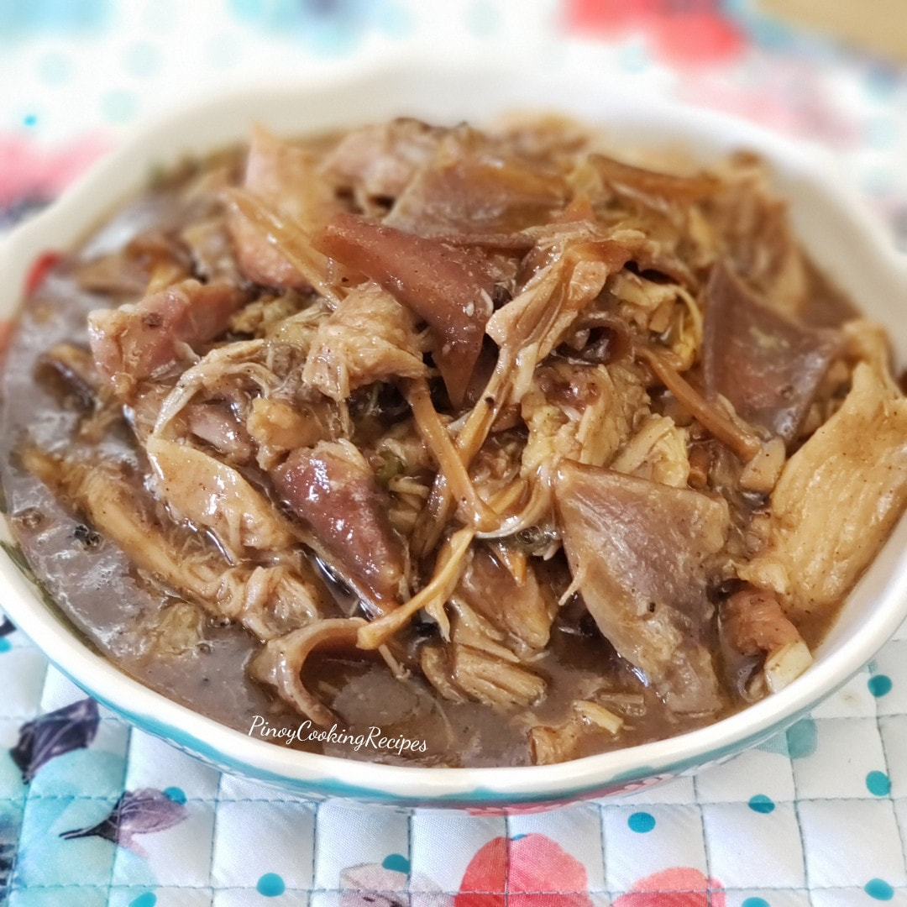

Lechon Paksiw

Description
Lechon Paksiw is a Filipino dish featuring shredded pork.
Ingredients
- 1 Tbsp canola oil
- 1 large onion, peeled and sliced
- 1 head garlic peeled and minced
- 3/4 cup vinegar
- 2 cups water
- 3/4 cups brown sugar
- 3 pounds leftover lechon or lechon kawali, chopped into 1 inch pieces
- 3 bay leaves
- 1/2 cup liver spread
- Salt and pepper to taste
Steps
- Heat oil in pot over medium. Add onions and garlic and cook until softened
- Add vinegar and water and bring to a boil, uncovered and unstirred for about
3-5 minutes
- Add lechon sauce and sugar and stir to combine
- Add pork and bay leaves
- Lower heat, cover, and continue to cook for 15-20 minutes until meat is tender.
Add more water in 1/2 cup increments as needed.
- Add liver spread and stir until well distributed
- Season with salt to taste and generously with pepper
- Continue to cook for about 8 to 10 minutes or until sauce is slightly thickened. Serve hot and enjoy!